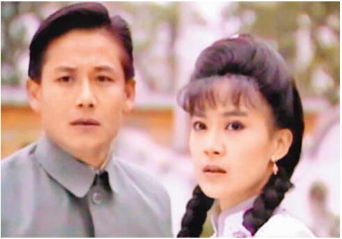
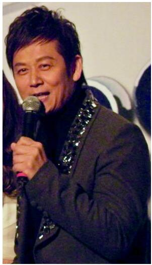
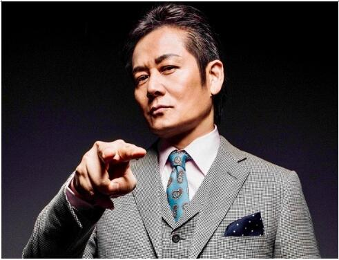
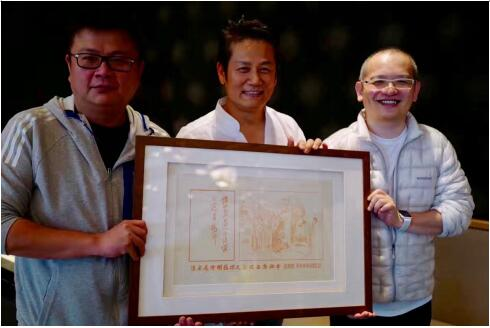
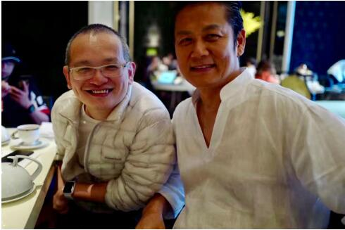
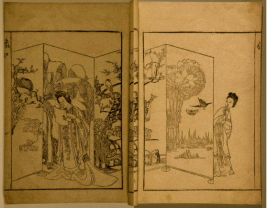

台湾最著名综艺节目主持人之一徐乃麟收藏《西厢窥简图》
安徽文交中心在近日中国台北举行仪式，向2006和2014年两届《金钟奖》得主、《婉君》男主角、台湾最著名综艺节目主持人之一徐乃麟赠送《西厢窥简图》。
徐乃麟祖籍安徽界首，1959年9月17日生于台湾省嘉义县大林。 24岁发行个人国语专辑《小薇》、《红鞋女孩》。1985年首次参演电视剧《台视剧场阳光少年》，因妻反对拍吻戏，加上综艺节目上班时间和收入比较稳定，开始朝主持发展。1989年主持第一个节目《百战百胜》，之后主持《综艺万花筒》《台湾红不让》等多个节目，并于2006年凭《小气大财神》，获得台湾电视金钟奖最佳节目主持人奖。2014年凭借《天才冲冲冲》第二次获得金钟奖综艺节目主持人奖。






《西厢窥简图》是《西厢秘本》最著名的一副插图，描绘的是莺莺窥张生情书，红娘在窥崔莺莺。《西厢窥简图》雕刻者为陈义时，是中国唯一一个获得雕版类高级工艺美术师技术职称的人，中国首批非物质文化遗产代表性传承人。刷印者为李江民，从事雕版印刷30余年，世界非物质文化遗产中国雕版印刷传承人。《西厢窥简图》绘图者为明末清初著名书画家、诗人陈洪绶。
2014年南京青奥会开幕期间，彭丽媛和部分外国元首夫人参观南京博物院之际，彭丽媛将李江民当场刷印的《西厢窥简图》作为国礼赠送给外国元首夫人。
2016年8月10日《西厢窥简图》在安徽文交中心挂牌上市，倍受资金追捧。安徽文交中心2011年7月成立，2012年通过安徽清理整顿各类交易场所联席会议验收，从事艺术品现货电子盘交易，通过艺术品O2O、金融文化互联网流动性促进实体文化艺术品产业发展。2016年4月上线以来，经过9个月的运营，中心开户数近60万，上线30支文化艺术品，总市值超过10亿元，总成交额达130亿元，11月份开始电子盘日成交额达到2.5亿元。